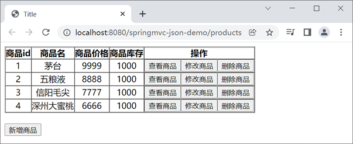
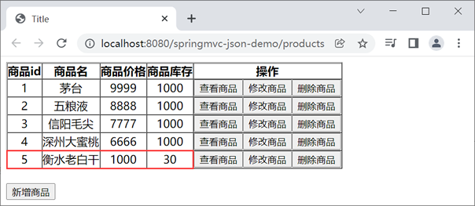
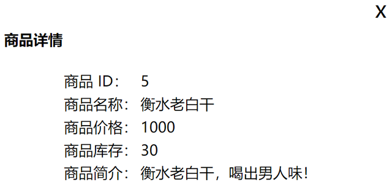
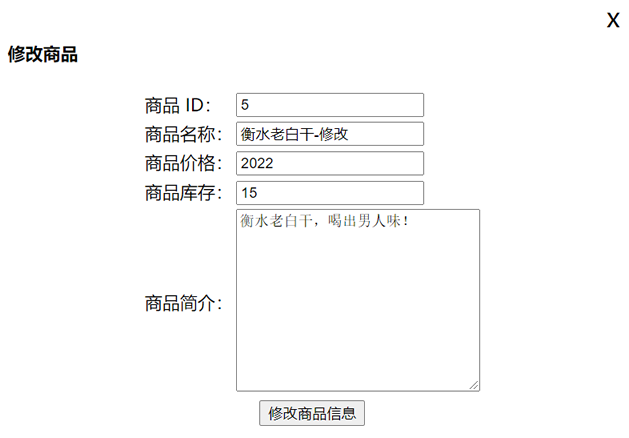
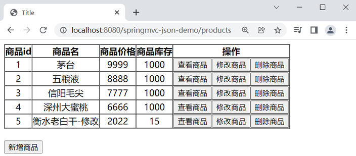
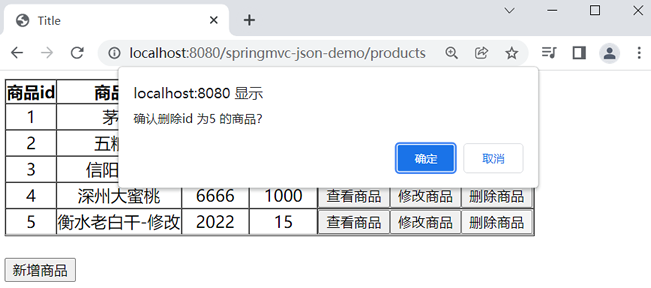

首页 > Spring MVC
Spring MVC JSON数据交互
我们知道，Spring MVC 在传递数据时，通常都需要对数据的类型和格式进行转换。而这些数据不仅可以常见的 String 类型，还可以是 JSON 等其他类型。
JSON 是近些年一种比较流行的数据格式，它与 XML 相似，也是用来存储数据的。但相较于 XML，JSON 数据占用的空间更小，解析速度更快。因此，使用 JSON 数据进行前后台的数据交互也是一种十分常见的手段。
本节将针对 Spring MVC 的 JSON 类型数据交互进行讲解。
JSON 支持 2 种数据结构，它们分别是对象结构和数组结构。
对象结构的语法结构如下。
其中，key 必须为 String 类型，value 可以是 String、Number、Object、Array 等数据类型。
例如，一个 person 对象包含姓名、密码、年龄等信息，使用 JSON 的表示形式如下：
数组结构的语法结构如下：
例如，一个数组中包含了 String、Number、Boolean、null 多种类型的数据，使用 JSON 的数组结构表示形式如下。
上述两种（对象、数组）数据结构也可以分别组合构成更加复杂的数据结构。
例如，一个 student 对象包含 sno、sname、hobby 和 college 等多个属性，其 JSON 表示形式如下。
以上这些 Jackson 的开源依赖包都可以通过“https://mvnrepository.com/artifact/com.fasterxml.jackson.core”下载得到。
1. 新建一个名为 springmvc-json-demo 的 Web 项目，并将 Spring MVC 和 Jackson 的依赖包引入到项目中，其 web.xml 配置如下。
2. 在 src 目录下（类路径下）新建一个 Spring MVC 的配置文件 springMVC.xml，配置内容如下。
在 Spring MVC 的配置文件中，除了配置了组件扫描和视图解析器外，我们还配置如下两个元素：
<mvc:resources /> 中包含两个重要的属性：location 和 mapping，关于这两个属性的说明如下表。
除此之外，我们还可以在 Spring MVC 的配置文件中使用以下配置，将静态资源交给 Tomcat 提供的默认的 Servlet 进行处理，这样也可以实现 Spring MVC 项目中静态资源的访问。
4. 在 net.biancheng.c.controller 包下，创建一个名为 ProductController 的 Controller 类，代码如下。
5. 在 net.biancheng.c.dao 包下，创建一个名为 ProductDao 的类，代码如下。
6. 在 webapp 下新建一个 js 目录，并将 jquery-3.6.0.min.js 存放到该目录下。
7. 在 webapp/WEB-INF 下新建一个 templates 目录，并在该目录下创建一个 product_list.html，代码如下。
8. 将 springmvc-json-demo 部署到 Tomcat 服务器中，启动 Tomcat，使用浏览器访问“http://localhost:8080/springmvc-json-demo/products”，结果如下图。
9. 点击下方的“新增商品”按钮，在弹出的新增商品页中填写商品信息，如下图。

图2：新增商品页
10. 在新增商品页点击“新增商品”按钮，返回商品列表页，结果如下图。
11. 点击商品“衡水老白干”右侧的“查看商品”按钮，在弹出的商品详情页中查看商品详情，如下图。
12. 返回“商品列表页”点击商品右侧的“修改商品”按钮，在弹出的“修改商品页”对商品进行修改，如下图。
13. 点击下方的“修改商品信息”按钮，返回商品列表页，结果如下图。
14. 点击商品列表页的“删除商品”按钮，删除商品“衡水老白干-修改”，如下图。
15. 点击“确定”按钮，删除商品，返回查看商品列表，如下图。
图8：商品列表页
JSON 是近些年一种比较流行的数据格式，它与 XML 相似，也是用来存储数据的。但相较于 XML，JSON 数据占用的空间更小，解析速度更快。因此，使用 JSON 数据进行前后台的数据交互也是一种十分常见的手段。
本节将针对 Spring MVC 的 JSON 类型数据交互进行讲解。
JSON 概述
JSON（JavaScript Object Notation，JS 对象标记）是一种轻量级的数据交互格式。与 XML 一样，JSON 也是一种基于纯文本的数据格式。通过它，我们不仅能够传递 String、Number、Boolean 等简单类型的数据，还可以传递数组、Object 对象等复杂类型的数据。JSON 支持 2 种数据结构，它们分别是对象结构和数组结构。
1. 对象结构
JSON 的对象结构以“{”开始，以“}”结束，中间则由 0 个或多个以英文的逗号（即“,”）分隔的 key/value 对构成。对象结构的语法结构如下。
{
key1:value1,
key2:value2,
...
}
其中，key 必须为 String 类型，value 可以是 String、Number、Object、Array 等数据类型。
例如，一个 person 对象包含姓名、密码、年龄等信息，使用 JSON 的表示形式如下：
{
"pname":"张三",
"password":"123456",
"page":40
}
2. 数组结构
JSON 的数组结构以“[”开始、以“]”结束，中间部分由 0 个或多个以英文的逗号（即“,”）分隔的值列表组成。数组结构的语法结构如下：
{
value1,
value2,
...
}
例如，一个数组中包含了 String、Number、Boolean、null 多种类型的数据，使用 JSON 的数组结构表示形式如下。
[
"c语言中文网",
123456789,
true,
null
]
上述两种（对象、数组）数据结构也可以分别组合构成更加复杂的数据结构。
例如，一个 student 对象包含 sno、sname、hobby 和 college 等多个属性，其 JSON 表示形式如下。
{
"sno":"201802228888",
"sname":"张三",
"hobby":[
"篮球",
"足球"
],
"college":{
"cname":"清华大学",
"city":"北京",
"code":100000
}
}
JSON 数据转换
为了实现浏览器与控制器类之间的 JSON 数据交互，Spring MVC 提供了一个默认的 MappingJackson2HttpMessageConverter 类，来处理 JSON 格式请求和响应。通过它，我们既可以将 Java 对象转换为 JSON 数据，也可以将 JSON 数据转换为 Java 对象。引入依赖包
想要使用 MappingJackson2HttpMessageConverter 对 JSON 数据进行转换，第一步就是要将 Jackson 的依赖包引入到 Spring MVC 项目中。- jackson-annotations-x.x.x.jar：JSON 转换的注解包
- jackson-core-x.x.x.jar：JSON 转换的核心包
- jackson-databind-x.x.x.jar：JSON 转换的数据绑定包
以上这些 Jackson 的开源依赖包都可以通过“https://mvnrepository.com/artifact/com.fasterxml.jackson.core”下载得到。
JSON 转换注解
Spring MVC 为我们提供了两个十分重要的与 JSON 格式转换相关的注解，它们分别是 @RequestBody 和 @ResponseBody。| 注解 | 位置 | 说明 |
|---|---|---|
| @RequestBody | 方法的形参上 | 该注解用于将请求体中的数据绑定到控制器方法的形参上。 |
| @ResponseBody | 方法上 |
该注解用于将控制器方法的返回值，直接作为响应报文的响应体响应到 浏览器上。 |
示例
下面我们通过一个实例，来演示下如何通过这两个注解对 JSON 进行转换。1. 新建一个名为 springmvc-json-demo 的 Web 项目，并将 Spring MVC 和 Jackson 的依赖包引入到项目中，其 web.xml 配置如下。
<?xml version="1.0" encoding="UTF-8"?>
<web-app xmlns="http://xmlns.jcp.org/xml/ns/javaee"
xmlns:xsi="http://www.w3.org/2001/XMLSchema-instance"
xsi:schemaLocation="http://xmlns.jcp.org/xml/ns/javaee http://xmlns.jcp.org/xml/ns/javaee/web-app_4_0.xsd"
version="4.0">
<!--请求和响应的字符串过滤器-->
<filter>
<filter-name>CharacterEncodingFilter</filter-name>
<filter-class>org.springframework.web.filter.CharacterEncodingFilter</filter-class>
<init-param>
<param-name>encoding</param-name>
<param-value>UTF-8</param-value>
</init-param>
<init-param>
<param-name>forceResponseEncoding</param-name>
<param-value>true</param-value>
</init-param>
</filter>
<filter-mapping>
<filter-name>CharacterEncodingFilter</filter-name>
<url-pattern>/*</url-pattern>
</filter-mapping>
<!--来处理 PUT 和 DELETE 请求的过滤器-->
<filter>
<filter-name>HiddenHttpMethodFilter</filter-name>
<filter-class>org.springframework.web.filter.HiddenHttpMethodFilter</filter-class>
</filter>
<filter-mapping>
<filter-name>HiddenHttpMethodFilter</filter-name>
<url-pattern>/*</url-pattern>
</filter-mapping>
<!-- 配置SpringMVC的前端控制器，对浏览器发送的请求统一进行处理 -->
<servlet>
<servlet-name>dispatcherServlet</servlet-name>
<servlet-class>org.springframework.web.servlet.DispatcherServlet</servlet-class>
<!--配置 DispatcherServlet 的一个初始化参数：spring mvc 配置文件按的位置和名称-->
<init-param>
<param-name>contextConfigLocation</param-name>
<param-value>classpath:springMVC.xml</param-value>
</init-param>
<!--作为框架的核心组件，在启动过程中有大量的初始化操作要做
而这些操作放在第一次请求时才执行会严重影响访问速度
因此需要通过此标签将启动控制DispatcherServlet的初始化时间提前到服务器启动时-->
<load-on-startup>1</load-on-startup>
</servlet>
<servlet-mapping>
<servlet-name>dispatcherServlet</servlet-name>
<!--设置springMVC的核心控制器所能处理的请求的请求路径
/所匹配的请求可以是/login或.html或.js或.css方式的请求路径
但是/不能匹配.jsp请求路径的请求-->
<url-pattern>/</url-pattern>
</servlet-mapping>
</web-app>
2. 在 src 目录下（类路径下）新建一个 Spring MVC 的配置文件 springMVC.xml，配置内容如下。
<?xml version="1.0" encoding="UTF-8"?> <beans xmlns="http://www.springframework.org/schema/beans" xmlns:xsi="http://www.w3.org/2001/XMLSchema-instance" xmlns:context="http://www.springframework.org/schema/context" xmlns:mvc="http://www.springframework.org/schema/mvc" xsi:schemaLocation="http://www.springframework.org/schema/beans http://www.springframework.org/schema/beans/spring-beans.xsd http://www.springframework.org/schema/context https://www.springframework.org/schema/context/spring-context.xsd http://www.springframework.org/schema/mvc https://www.springframework.org/schema/mvc/spring-mvc.xsd"> <!--开启组件扫描--> <context:component-scan base-package="net.biancheng.c"></context:component-scan> <!-- 配置 Thymeleaf 视图解析器 --> <bean id="viewResolver" class="org.thymeleaf.spring5.view.ThymeleafViewResolver"> <property name="order" value="1"/> <property name="characterEncoding" value="UTF-8"/> <property name="templateEngine"> <bean class="org.thymeleaf.spring5.SpringTemplateEngine"> <property name="templateResolver"> <bean class="org.thymeleaf.spring5.templateresolver.SpringResourceTemplateResolver"> <!-- 视图前缀 --> <property name="prefix" value="/WEB-INF/templates/"/> <!-- 视图后缀 --> <property name="suffix" value=".html"/> <property name="templateMode" value="HTML5"/> <property name="characterEncoding" value="UTF-8"/> </bean> </property> </bean> </property> </bean> <!-- view-name：设置请求地址所对应的视图名称--> <mvc:view-controller path="/products" view-name="product_list"></mvc:view-controller> <!-- view-name：设置请求地址所对应的视图名称--> <mvc:view-controller path="/" view-name="login"></mvc:view-controller> <!-- 当SpringMVC中设置任何一个view-controller时，其他控制器中的请求映射将全部失效，此时需要在SpringMVC的核心配置文件中设置开启mvc注解驱动的标签--> <mvc:annotation-driven></mvc:annotation-driven> <!--静态资源映射--> <mvc:resources mapping="/js/" location="/js/**"></mvc:resources> </beans>
在 Spring MVC 的配置文件中，除了配置了组件扫描和视图解析器外，我们还配置如下两个元素：
- <mvc:annotation-driven /> ：Spring MVC 的注解驱动，配置会自动注册 RequestMappingHandlerMapping 和 RequestMappingHandlerAdapter 两个组件，为读写 JSON 数据提供支持。
- <mvc:resources /> ：静态资源访问映射，用于配置静态资源的访问路径。
<mvc:resources /> 中包含两个重要的属性：location 和 mapping，关于这两个属性的说明如下表。
| 属性 | 说明 |
|---|---|
| location | 该属性用于设置需要访问的本地静态资源文件的路径。 |
| mapping | 匹配静态资源全路径，其中“/**”表示文件夹及其子文文件夹下的某个具体文件。 |
除此之外，我们还可以在 Spring MVC 的配置文件中使用以下配置，将静态资源交给 Tomcat 提供的默认的 Servlet 进行处理，这样也可以实现 Spring MVC 项目中静态资源的访问。
<mvc:default-servlet-handler />
3. 在 net.biancheng.c.bean 包下，创建一个名为 Product 的实体类，代码如下。<mvc:resources /> 和 <mvc:default-servlet-handler /> 这两个标签配置都可以实现静态资源的映射，我们可以根据自身的需求自行选择。
package net.biancheng.c.bean;
import java.math.BigDecimal;
public class Product {
private String productId;
private String productName;
private BigDecimal price;
private Integer stock;
private String introduction;
public String getIntroduction() {
return introduction;
}
public void setIntroduction(String introduction) {
this.introduction = introduction;
}
public String getProductId() {
return productId;
}
public void setProductId(String productId) {
this.productId = productId;
}
public String getProductName() {
return productName;
}
public void setProductName(String productName) {
this.productName = productName;
}
public BigDecimal getPrice() {
return price;
}
public void setPrice(BigDecimal price) {
this.price = price;
}
public Integer getStock() {
return stock;
}
public void setStock(Integer stock) {
this.stock = stock;
}
@Override
public String toString() {
return "Product{" +
"productId=" + productId +
", productName='" + productName + '\'' +
", price=" + price +
", stock=" + stock +
", introduction='" + introduction + '\'' +
'}';
}
}
4. 在 net.biancheng.c.controller 包下，创建一个名为 ProductController 的 Controller 类，代码如下。
package net.biancheng.c.controller;
import net.biancheng.c.bean.Product;
import net.biancheng.c.dao.ProductDao;
import org.springframework.stereotype.Controller;
import org.springframework.web.bind.annotation.*;
import javax.annotation.Resource;
import java.util.List;
/**
* @author C语言中文网
*/
@Controller
public class ProductController {
@Resource
private ProductDao productDao;
/**
* 查看或回显商品信息，get：查看商品信息 update:为修改页回显的商品信息
*/
@ResponseBody
@RequestMapping("/product/{productId}")
public Product getProduct(@PathVariable("productId") String productId) {
Product product = productDao.getProductById(productId);
return product;
}
/**
* 新增商品
*
* @param product
* @return
*/
@ResponseBody
@RequestMapping(value = "/product", method = RequestMethod.POST)
public Product addProduct(@RequestBody Product product) {
productDao.addProduct(product);
return product;
}
/**
* 删除指定的商品
*
* @param productId
* @return
*/
@RequestMapping(value = "/product", method = RequestMethod.DELETE)
public String deleteProduct(String productId) {
productDao.deleteProduct(productId);
return "redirect:/products";
}
/**
* 获取商品列表
*
* @return
*/
@ResponseBody
@RequestMapping("/getProductList1")
public List<Product> getProductList1() {
List productList = productDao.getProductList();
return productList;
}
/**
* 修改商品信息
*
* @param product
* @return
*/
@RequestMapping(value = "/edit-product")
public String updateProduct(Product product) {
productDao.updateProduct(product);
return "redirect:/products";
}
}
5. 在 net.biancheng.c.dao 包下，创建一个名为 ProductDao 的类，代码如下。
package net.biancheng.c.dao;
import net.biancheng.c.bean.Product;
import org.springframework.stereotype.Repository;
import java.math.BigDecimal;
import java.util.*;
@Repository
public class ProductDao {
private static Map<String, Product> products = null;
static {
products = new HashMap<String, Product>();
Product product = new Product();
product.setProductId("1");
product.setProductName("茅台");
product.setPrice(new BigDecimal(9999));
product.setStock(1000);
product.setIntroduction("茅台酒是大曲酱香型酒的鼻祖。");
Product product1 = new Product();
product1.setProductId("2");
product1.setProductName("五粮液");
product1.setPrice(new BigDecimal(8888));
product1.setStock(1000);
product1.setIntroduction("五粮液，四川省宜宾市特产，中国国家地理标志产品。");
Product product2 = new Product();
product2.setProductId("3");
product2.setProductName("信阳毛尖");
product2.setPrice(new BigDecimal(7777));
product2.setStock(1000);
product2.setIntroduction("信阳毛尖又称豫毛峰，属绿茶类，是中国十大名茶之一，也是河南省著名特产之一；");
Product product3 = new Product();
product3.setProductId("4");
product3.setProductName("深州大蜜桃");
product3.setPrice(new BigDecimal(6666));
product3.setStock(1000);
product3.setIntroduction("深州蜜桃，河北省深州市特产，中国国家地理标志产品。");
products.put(product.getProductId(), product);
products.put(product1.getProductId(), product1);
products.put(product2.getProductId(), product2);
products.put(product3.getProductId(), product3);
}
/**
* 获取商品列表
*
* @return
*/
public List getProductList() {
List productList = new ArrayList();
Set<String> keys = products.keySet();
for (String key : keys) {
Product product = products.get(key);
productList.add(product);
}
return productList;
}
/**
* 根据商品 id 获取商品信息
*
* @param productId
* @return
*/
public Product getProductById(String productId) {
return products.get(productId);
}
/**
* 新增商品
*
* @param product
*/
public void addProduct(Product product) {
products.put(product.getProductId(), product);
}
/**
* 修改商品
*
* @param product
*/
public void updateProduct(Product product) {
products.put(product.getProductId(), product);
}
/**
* 删除商品
*
* @param productId
*/
public void deleteProduct(String productId) {
products.remove(productId);
}
}
6. 在 webapp 下新建一个 js 目录，并将 jquery-3.6.0.min.js 存放到该目录下。
7. 在 webapp/WEB-INF 下新建一个 templates 目录，并在该目录下创建一个 product_list.html，代码如下。
<!DOCTYPE html>
<html lang="en" xmlns:th="http://www.thymeleaf.org">
<head>
<meta charset="UTF-8">
<title>Title</title>
<!--引入 jquery-->
<script type="text/javaScript"
src="../../js/jquery-3.6.0.min.js " th:src="@{/js/jquery-3.6.0.min.js}"></script>
</head>
<body>
<table th:border="1" th:cellspacing="0" th:cellpadding="0" style="text-align: center;">
<thead>
<th>商品id</th>
<th>商品名</th>
<th>商品价格</th>
<th>商品库存</th>
<th>操作</th>
</thead>
<tbody th:id="tb">
</tbody>
</table>
<br>
<!-- 作用：通过超链接控制表单的提交，将post请求转换为delete请求 -->
<form id="delete_form" method="post" th:action="@{/product}">
<!-- HiddenHttpMethodFilter要求：必须传输_method请求参数，并且值为最终的请求方式 -->
<input type="hidden" name="_method" value="delete"/>
<input type="hidden" name="productId" th:id="form-id"/>
</form>
<button id="btn">新增商品</button>
<div id="addWindow">
<label id="x" style="position: absolute;top:2px;left: 95%;font-size: 25px;">x</label>
<h4>新增商品</h4>
<form th:action="@{/product}" method="post">
<table id="table-box" style="margin: auto">
<tr>
<td>商品 ID：</td>
<td><input type="text" id="productId" name="productId" required></td>
</tr>
<tr>
<td>商品名称：</td>
<td><input type="text" id="productName" name="productName" required></td>
</tr>
<tr>
<td>商品价格：</td>
<td><input type="text" id="price" name="price" required></td>
</tr>
<tr>
<td>商品库存：</td>
<td><input type="text" id="stock" name="stock" required></td>
</tr>
<tr>
<td>商品简介：</td>
<td><textarea id="introduction" name="introduction" rows="10" cols="30"></textarea><br></td>
</tr>
<tr>
<td colspan="2" align="center"><input id="addPro" type="submit" value="新增商品">
<input type="reset" id="reset" value="重置">
</td>
</tr>
</table>
</form>
</div>
<div id="backGround"></div>
<div id="editWindow">
<label id="ex" style="position: absolute;top:2px;left: 95%;font-size: 25px;">x</label>
<h4>修改商品</h4>
<form th:action="@{/edit-product}" id="edit-form" method="post">
<table id="edit-form-table" style="margin: auto">
<tr>
<td>商品 ID：</td>
<td><input id="e-productId" type="text" name="productId" readonly></td>
</tr>
<tr>
<td>商品名称：</td>
<td><input id="e-productName" type="text" name="productName" required></td>
</tr>
<tr>
<td>商品价格：</td>
<td><input id="e-price" type="text" name="price" required></td>
</tr>
<tr>
<td>商品库存：</td>
<td><input id="e-stock" type="text" name="stock" required></td>
</tr>
<tr>
<td>商品简介：</td>
<td><textarea id="e-introduction" name="introduction" rows="10" cols="30"></textarea>
</td>
</tr>
<tr>
<td colspan="2" align="center"><input type="submit" value="修改商品信息"></td>
</tr>
</table>
</form>
</div>
<div id="edit-backGround"></div>
<div id="lookWindow">
<label id="lx" style="position: absolute;top:2px;left: 95%;font-size: 25px;">x</label>
<h4>商品详情</h4>
<table style="margin: auto">
<tr>
<td>商品 ID：</td>
<td id="l-productId"></td>
</tr>
<tr>
<td>商品名称：</td>
<td id="l-productName"></td>
</tr>
<tr>
<td>商品价格：</td>
<td id="l-price"></td>
</tr>
<tr>
<td>商品库存：</td>
<td id="l-stock"></td>
</tr>
<tr>
<td>商品简介：</td>
<td id="l-introduction"></td>
</tr>
</table>
</div>
<div id="look-backGround"></div>
<script type="text/javaScript">
$(document).ready(function () {
//点击新增商品，弹出新增商品弹窗
$("#btn").click(function () {
$("#addWindow").slideDown(300);
$("#backGround").show();
});
$("#x").click(function () {
$("#addWindow").slideUp(300);
$("#backGround").hide();
$("#reset").trigger("click")
});
$("#ex").click(function () {
$("#editWindow").slideUp(300);
$("#edit-backGround").hide();
});
$("#lx").click(function () {
$("#lookWindow").slideUp(300);
$("#look-backGround").hide();
});
$("#look-close").click(function () {
$("#lookWindow").slideUp(300);
$("#look-backGround").hide();
});
/**
* 填完数据后，点击新增商品弹窗中的 新增商品 按钮，执行新增商品操作
*/
$("#addPro").click(function () {
add();
$("#addWindow").slideUp(300);
$("#backGround").hide();
$("#reset").trigger("click")
});
$("#editPro").click(function () {
$("#edit-form").submit();
$("#editWindow").slideUp(300);
$("#edit-backGround").hide();
$("#e-reset").trigger("click")
});
});
$(function () {
$.ajax({
//请求路径
url: "http://localhost:8080/springmvc-json-demo/getProductList1",
//请求类型
type: "get",
//定义发送请求的数据格式为JSON字符串
contentType: "application/json;charset=utf-8",
//定义回调响应的数据格式为JSON字符串，该属性可以省略
dataType: "json",
//成功响应的结果
success: function (data) {
if (data != null) {
var html = "";
for (var i = 0; i < data.length; i++) {
var product = data[i];
html += "<tr>" +
"<td>" + product.productId + "</td>" +
"<td>" + product.productName + "</td>" +
"<td>" + product.price + "</td>" +
"<td>" + product.stock + "</td>" +
"<td><button onclick='lookPage(" + product.productId + ")'>查看商品</button>" +
"<button onclick='editPage(" + product.productId + ")';>修改商品</button>" +
"<button onclick='deletePro(" + product.productId + ")';>删除商品</button></td>" +
"</tr>"
}
$("#tb").html(html);
}
}
});
})
function deletePro(productId) {
var b = confirm("确认删除id 为" + productId + " 的商品？");
if (b) {
var delete_form = $("#delete_form");
$("#form-id").val(productId);
delete_form.submit();
}
}
//执行新增商品操作
function add() {
var productId = $("#productId").val();
var productName = $("#productName").val();
var price = $("#price").val();
var introduction = $("#introduction").val();
var stock = $("#stock").val();
$.ajax({
//请求路径
url: "http://localhost:8080/springmvc-json-demo/product",
//请求类型
type: "post",
data: JSON.stringify({
productId: productId,
productName: productName,
price: price,
stock: stock,
introduction: introduction
}), //定义发送请求的数据格式为JSON字符串
contentType: "application/json;charset=utf-8",
//定义回调响应的数据格式为JSON字符串，该属性可以省略
dataType: "json",
//成功响应的结果
success: function (data) {
if (data != null) {
var product = data;
var html = "<tr>" +
"<td>" + product.productId + "</td>" +
"<td>" + product.productName + "</td>" +
"<td>" + product.price + "</td>" +
"<td>" + product.stock + "</td>" +
"<td><button onclick='lookPage(" + product.productId + ")'>查看商品</a>" +
"<button onclick='editPage(" + product.productId + ")';>修改商品</a>" +
"<button onclick='deletePro(" + product.productId + ")';>删除商品</a></td>" +
"</tr>";
$("#tb").append(html);
}
}
});
}
function lookPage(productId) {
$("#lookWindow").slideDown(300);
$("#look-backGround").show();
$.ajax({
//请求路径
url: "http://localhost:8080/springmvc-json-demo/product/" + productId,
//请求类型
type: "get",
//定义发送请求的数据格式为JSON字符串
contentType: "application/json;charset=utf-8",
//定义回调响应的数据格式为JSON字符串，该属性可以省略
dataType: "json",
//成功响应的结果
success: function (data) {
if (data != null) {
$("#l-productId").html(data.productId);
$("#l-productName").html(data.productName);
$("#l-price").html(data.price);
$("#l-stock").html(data.stock);
$("#l-introduction").html(data.introduction);
}
}
});
}
// 打开商品修改页，并将商品信息回显到弹窗中
function editPage(productId) {
$("#editWindow").slideDown(300);
$("#edit-backGround").show();
$.ajax({
//请求路径
url: "http://localhost:8080/springmvc-json-demo/product/" + productId,
//请求类型
type: "get",
//定义发送请求的数据格式为JSON字符串
contentType: "application/json;charset=utf-8",
//定义回调响应的数据格式为JSON字符串，该属性可以省略
dataType: "json",
//成功响应的结果
success: function (data) {
if (data != null) {
var product = data;
$("#e-productId").val(data.productId);
$("#e-productName").val(data.productName);
$("#e-price").val(data.price);
$("#e-stock").val(data.stock);
$("#e-introduction").val(data.introduction);
}
}
});
}
</script>
<style type="text/css">
#addWindow, #editWindow {
display: none;
position: absolute;
top: 25%;
left: 25%;
width: 30%;
height: 40%;
padding: 20px;
border: 3px solid #ccc;
background-color: white;
z-index: 2;
overflow: auto;
}
#lookWindow {
display: none;
position: absolute;
top: 25%;
left: 25%;
width: 30%;
height: 30%;
padding: 20px;
border: 3px solid #ccc;
background-color: white;
z-index: 2;
overflow: auto;
}
#backGround, #edit-backGround, #look-backGround {
display: none;
position: absolute;
top: 0%;
left: 0%;
width: 100%;
height: 1100px;
background-color: black;
z-index: 1;
-moz-opacity: 0.8;
opacity: .80;
filter: alpha(opacity=88);
}
#x:hover, #lx:hover, #ex:hover {
cursor: pointer;
color: rgb(55, 198, 192);
}
</style>
</body>
</html>
8. 将 springmvc-json-demo 部署到 Tomcat 服务器中，启动 Tomcat，使用浏览器访问“http://localhost:8080/springmvc-json-demo/products”，结果如下图。

图1：商品列表
图1：商品列表
9. 点击下方的“新增商品”按钮，在弹出的新增商品页中填写商品信息，如下图。
图2：新增商品页
10. 在新增商品页点击“新增商品”按钮，返回商品列表页，结果如下图。

图3：商品列表页-2
图3：商品列表页-2
11. 点击商品“衡水老白干”右侧的“查看商品”按钮，在弹出的商品详情页中查看商品详情，如下图。

图4：商品详情页
图4：商品详情页
12. 返回“商品列表页”点击商品右侧的“修改商品”按钮，在弹出的“修改商品页”对商品进行修改，如下图。

图5：修改商品页
图5：修改商品页
13. 点击下方的“修改商品信息”按钮，返回商品列表页，结果如下图。

图6：商品列表
图6：商品列表
14. 点击商品列表页的“删除商品”按钮，删除商品“衡水老白干-修改”，如下图。

图7：删除商品
图7：删除商品
15. 点击“确定”按钮，删除商品，返回查看商品列表，如下图。
图8：商品列表页
关注公众号「站长严长生」，在手机上阅读所有教程，随时随地都能学习。内含一款搜索神器，免费下载全网书籍和视频。

微信扫码关注公众号